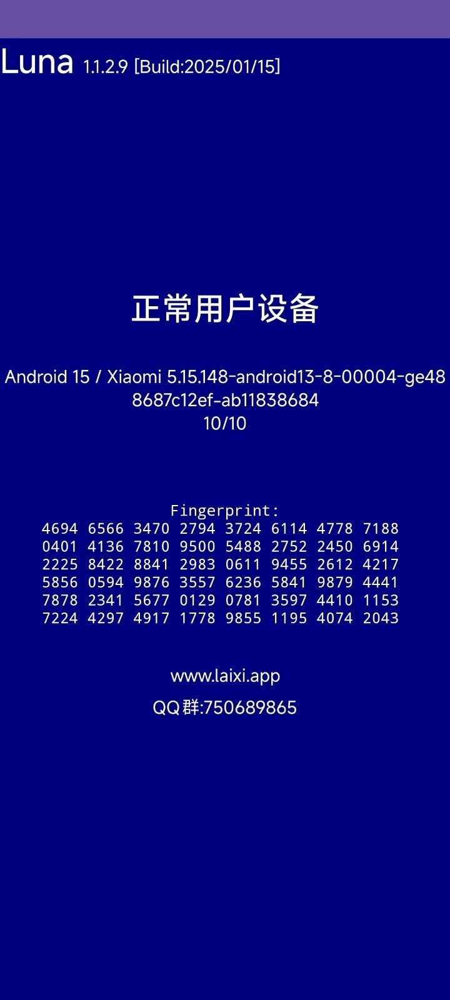

Luna 要不要付费：一笔二手圈和搞机党的时间账
Luna 作为一款安卓环境检测工具，目前完全免费免注册。但同类工具的付费版本越来越多，我们算一算：免费版够不够用、它到底值不值掏钱、哪类人该留哪类人该放。
它到底值不值得掏钱？这是我把 Luna 装了三个多月、跑了不下二十次之后一直在问自己的问题。
先说一个基本事实：Luna 的官网上目前还看不到付费的影子——免注册、无账号、本地跑完就出结果，界面连个登录按钮都没有。但我翻文档的时候注意到一个信号——同类工具里已经有好几个在卖 Pro 版了，价格从年付六十八买断到一百二十八不等。那问题就变了：Luna 现在免费给你的这些能力，如果某天开始收费，值不值？ 这个假设不算离谱，工具一旦跑通了检测链路、积累了用户，商业化几乎是必然的。所以提前算好这笔账，等那天真来了你三秒能决定要不要掏。
定价拆解：免费版到底给了什么
先把 Luna 免费版的功能边界列清楚。素材里没写付费版本的任何信息，那我们就以现在免费版的能力为基准线，对比同类付费工具通常会多给什么。
免费版已覆盖的核心检测项：
- 一键全面检测：硬件参数、Root/Bootloader 状态、环境特征一次跑完；
- 病毒扫描：内置特征库比对，拦已知威胁；
- 插件与注入组件识别：能抓到不该在的东西；
- 界面无广告、无弹窗：这一点很重要，同类免费工具里插广告的不在少数。

具体的检测项含义和判读方法可以去Luna文档翻，写得挺细。
如果按竞品惯例来推，付费版本大概率会加：更频繁的特征库更新、云端同步报告、批量检测接口、企业级 API 接入。这些东西对个人用户来说，权重完全不一样。
算账：三类用户的单位时间成本
算钱要对着人算。我把 Luna 的用户分成三类，每类的需求强度和付费意愿天差地别。
轻度用户：一年用三两次，免费版够了
这类人就是偶尔买个二手机，或者帮朋友验个机。从Luna下载拿安装包，检测一次、拍张照、看完删应用，整个过程不到十分钟。

对他们来说，免费版已经把"设备有没有 Root、有没有恶意残留、Bootloader 锁没锁"这些最核心的问题给了答案。就算付费版能多扫出几个边缘项，轻度用户大概率也看不懂、看不懂的东西就算知道了也没处处理。
时间账：一年省个两三次线下验机的来回跑，撑死省半天时间。这点时间折算成钱，连一顿外卖都到不了。付费不值得。
主力用户：每月用三五次，开始感受到时间成本
这类人分两种：一种是二手平台的小卖家，每个月出三四台机器，每台都要先测一遍自证报告；另一种是搞机玩家，刷机换模块之后习惯性跑一遍确认环境状态。
免费版对他们来说能用但不算顺手的地方有两个：一是特征库更新节奏不确定，二是每次检测结果只能手动拍照存证、没法云端归档。小卖家每出一台都要重新跑完整检测、重新拍照整理，这个重复劳动在月销十台以上的时候会开始烦。搞机玩家每次换完模块都要手动比对上一次的结果，有没有变化全靠眼睛扫。
时间账：按每月多花两小时在存证和比对上算，一年就是二十四小时。如果付费版能把这个时间压到十分钟（云端自动存证 + 差异对比），那省下来的时间大概值五十到八十块。这个区间刚好卡在同类工具年付的起步价上——如果你正好在这个时间成本线上，可以考虑付。但我要提一个鸡贼的点：很多人买了付费版之后，发现自己其实没用到那个自动归档功能，因为换手机或者清理数据的时候还是会丢。时间成本的估算很容易虚高。
重度用户：企业采购或高频验机，有刚性需求
这一类是我能想到的唯一愿意掏钱的场景。比如企业 IT 部门做 BYOD 初筛，拿到设备先跑一遍检测；或者线下二手机市场的专业验机师傅，每天要验二十台以上。他们需要的不是功能多一点，而是检测链路稳定、结果可归档、有日志可追溯。
免费版的三个硬伤在这个场景下被无限放大：
- 检测结果无法批量导出，二十台机器要拍二十次；
- 没有企业级 API，没法接入已有设备管理流程；
- 数据全部本地存，设备恢复出厂就没了。
对重度用户来说，付费不是为了功能多，是为了流程能跑通。按每天二十台算，手动操作的时间成本每天至少一小时，一年下来就是两百五十个小时。这点时间折算成人工费，年付三百都嫌便宜。
替代方案：不付这笔钱的退路
如果某天 Luna 真收费了，不是没路可走。
第一条路是同类免费工具轮换。安卓检测这个赛道工具不少，大部分都有免费版本，功能侧重点各有不同——有的在 Root 识别上更准，有的病毒库更新更勤快。轮换用的好处是免费，但坏处是每个工具的界面和结果判定逻辑不一样，切换成本不低。
第二条路是降低使用频率。我自己试过把每月三五次的检测压缩到只在关键节点跑——换机时、刷机后、出二手前。三次检测覆盖了我百分之九十以上的需求，剩下的场景其实是在重复确认"我已经知道的事"。
第三条路是自建检测脚本，但这条只适合会写代码的人。ADB 能拿到的系统状态数据足够自己拼一个轻量版检测，开源社区也有不少现成的检测逻辑可以参考。门槛是动手能力，但完全免费。
结论：哪类人闭眼付、哪类人再等等、哪类人永远不用付
最后用一句话给每个人对号入座：
- 闭眼付：企业 IT 做 BYOD 初筛的、线下验机师傅日验十台以上的、有合规追溯需求的——流程刚需，时间成本摆在那，付费是节省不是支出。
- 再等等：每月用三五次的二手小卖家和搞机玩家——先观察付费版本到底多了什么，别为"感觉省时间"买单，用两三个月后真觉得手动存证烦了再掏不迟。
- 永远不用付：一年用三两次的轻度用户——免费版给的能力已经覆盖了所有核心需求，多出来的功能你用不上也看不懂。
我自己站在"再等等"这一档。付费版的自动归档和差异对比确实诱人，但我翻了自己三个月的检测记录，真正需要追溯对比的只有两次——一次是刷机后确认 Magisk 状态，一次是帮朋友验二手机。两次都手动解决了，并没有因为没付费版耽误什么事。
等 Luna 真出付费版的那天，我会先试用一周。试用期间如果发现自己真的离不开那个自动归档，再掏钱。在此之前，免费版够用了。关于检测能力的详细资料，维护方在GitHub、Gitee、GitCode都有同步维护，国内访问挑一个顺手的就行。